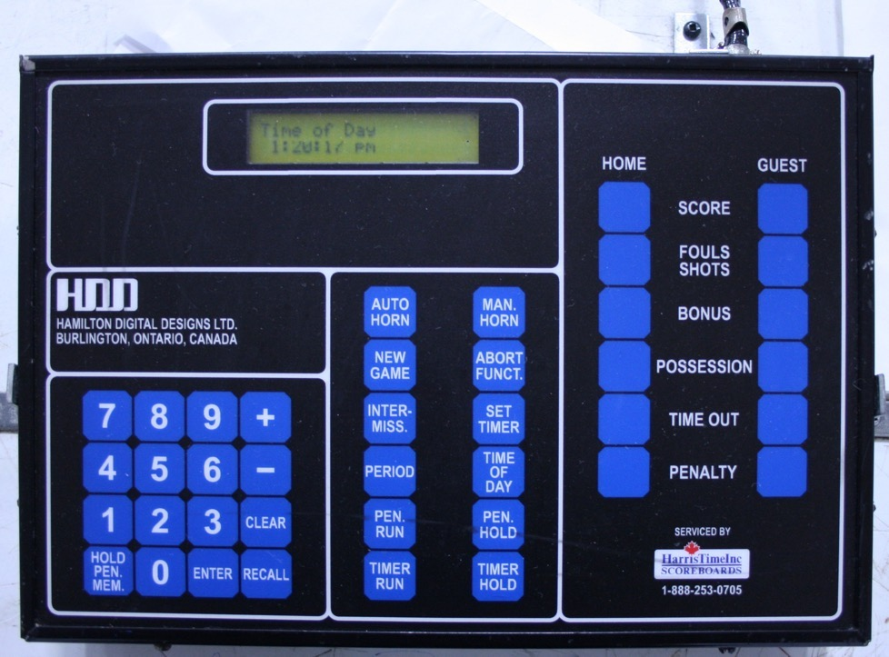

GET COMFORTABLE BEFORE PUCK DROP
Meet the 2000 series.
HDD PR95019A / PR95022A · hockey · manual 90-19-009
Physical button positions preserved · swipe the console sideways on a phone
2000-series manual · controls, penalties & limits

Hockey profile based on the HDD 2000 Series manual, 90-19-009 ↗, models PR95019A / PR95022A. Use the separate VisionTime profile for the later quick-start sheet. The panel follows the drawing on page 10 of the manual and the 2000-series reference image ↗: LCD at upper left, calculator-style keypad below it, central function keys, and HOME/GUEST columns on the right. Unused basketball positions stay visible but inactive in hockey mode. On phones, scroll the console sideways to keep the physical key arrangement.
New game: NEW GAME → CLEAR → 1 (down) or 0 (up) → period → ENTER → minutes → ENTER → seconds → ENTER. Period setup has no hundredths field. SET TIMER automatically holds the clock and edits minutes, seconds, then hundredths. A period of 0 opens warm-up setup; a duration of 0 selects open-ended count-up.
Entry: ENTER accepts a suggested value. + and − adjust numeric fields or select a recalled penalty. CLEAR sets the value to zero; to replace it, type your digits. RECALL restores the suggested value in a numeric field. ABORT FUNCT cancels an unfinished edit. TIMER RUN/HOLD and PENALTY RUN/HOLD act immediately, including during entry.
Penalties: PENALTY → ENTER → jersey → ENTER → minutes → ENTER → seconds → ENTER. HOLD PEN MEM cycles normal, delayed, misconduct and delayed misconduct. A third normal penalty is suggested as delayed. Repeated nonzero jersey numbers are automatically delayed. The memory holds 15 penalties per team; the scoreboard displays its first two lines. When a normal penalty expires or is cancelled, a delayed penalty can start; misconduct expiry does not release a delayed penalty.
Review/edit: RECALL → PENALTY, then + / − selects a line. CLEAR → ENTER cancels it. HOLD PEN MEM → ENTER changes its type. RECALL toggles the player/time cursor; entering digits opens that edit. While reviewing, expired penalties remain in memory until you exit with ENTER or ABORT FUNCT.
Breaks: INTERMISSION → minutes → ENTER starts the break clock immediately. Repeat with zero minutes to cancel it. Normal intermission expiry leaves 0:00 displayed; period 0 warm-up sounds a short horn. TIME OUT for either team → seconds → ENTER starts a timeout; zero cancels it. Timeouts return to the held game clock at expiry.
Horn: AUTO HORN → 0 → ENTER disables the repeating horn but keeps end signals; CLEAR → ENTER disables all automatic horns. Values 1–240 repeat during game time. Manual horn sounds while held; sound starts on. SET TIMER does not reset the repeating horn interval.
Scope: Hockey with a two-line penalty scoreboard, optional shots display, no printer. Basketball/other sports, hardware setup, external switches, serial output, PINs, millisecond timing and power-loss memory are not simulated. RECALL restores the suggested field value; full multi-field backward navigation is not implemented. Rules decisions and penalty cancellation after a goal remain the operator’s responsibility.